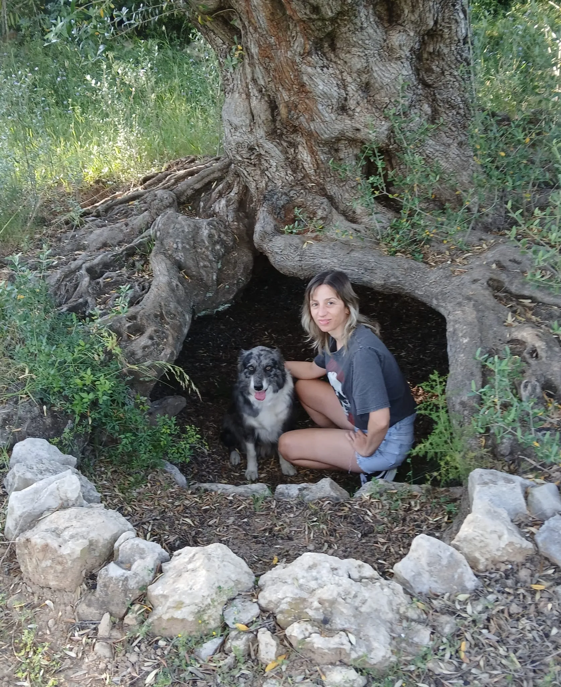

Teràpia caminant
Sessions a l'aire lliure per facilitar la reflexió, la regulació i una vivència terapèutica més orgànica.
Psicòloga a la Sénia · Teràpia caminant, teràpia amb gossos i acompanyament emocional
Un espai terapèutic proper, humà i en moviment per acompanyar adolescents, famílies i persones que travessen moments difícils.
La proposta combina escolta, natura i vincle per crear un procés respectuós amb cada ritme.

Caminar, respirar i sentir-se acompanyat també poden formar part del procés terapèutic.
Espai pensat per a sessions a la Sénia i entorn natural.Una proposta pensada per treballar des de la proximitat, el moviment i l'acompanyament emocional.
Sessions a l'aire lliure per facilitar la reflexió, la regulació i una vivència terapèutica més orgànica.
Un acompanyament on el vincle amb el gos pot afavorir la confiança, la calma i l'expressió emocional.
Suport per a adolescents, famílies i persones que estan travessant dificultats de conducta, dol o moments de canvi.
Treball terapèutic on la presència del gos acompanya la regulació emocional i la creació d'un espai segur.
Acompanyament en moments de conflicte, desregulació, límits, relacions familiars i malestar emocional.
Espai per transitar absències, canvis vitals i processos de pèrdua amb sensibilitat i respecte.